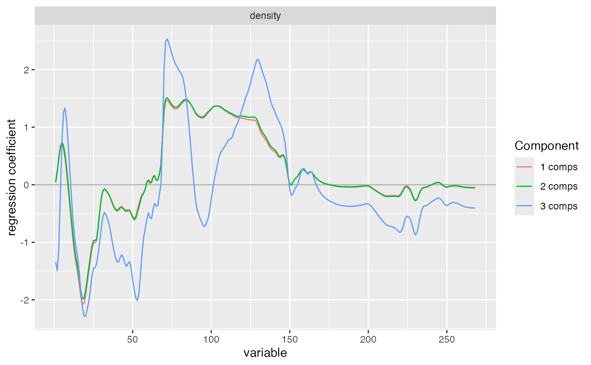

Create a coefficient plot from an mvr model using ggplot2.
Usage
gg_coefplot(object, ...)
# S3 method for class 'mvr'
gg_coefplot(
object,
ncomp = object$ncomp,
comps,
intercept = FALSE,
separate = FALSE,
se.whiskers = FALSE,
labels = FALSE,
pretty.xlabels = TRUE,
xlab = "variable",
ylab = "regression coefficient",
main = NULL,
response = NULL,
plotly = FALSE,
...
)Arguments
- object
model object.
- ...
further arguments passed to methods.
- ncomp
positive integer vector. Number of components used for coefficient output.
- comps
integer vector. Component numbers to plot instead of ncomp.
- intercept
logical. Include the intercept in the coefficient output.
- separate
logical. If
TRUE, facet by component size.- se.whiskers
logical. If
TRUE, add jackknife-based standard error whiskers. Only available for models fitted withjackknife = TRUE.- labels
optional labels for the x axis.
- pretty.xlabels
logical. If
TRUE, x-axis labels are thinned for dense spectral plots.- xlab, ylab
axis labels.
- main
optional title.
- response
optional response to plot. If
NULL, all responses are shown. If specified, only that response is plotted.- plotly
logical. If
TRUE, use plotly output.
Examples
data(yarn)
mod <- plsr(density ~ NIR, ncomp = 6, data = yarn)
if (requireNamespace("ggplot2", quietly = TRUE)) {
gg_coefplot(mod, ncomp = 1:3)
}
